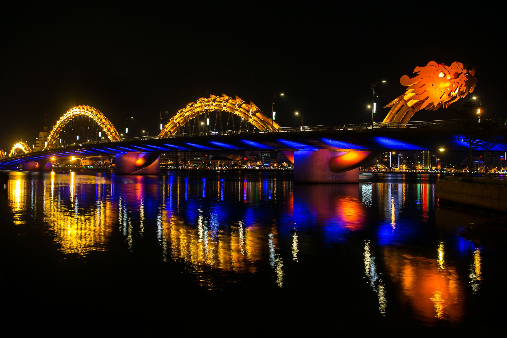

DU NGOẠN DANH THẮNG MIỀN BẮC THEO CÁCH RIÊNG – Địa danh du lịch Sapa được ví như cô gái đẹp trong buổi sớm mai đất trời còn ngái ngủ, với hàm mi rợp mát trên cặp mắt mơ màng của nàng thiếu nữ đang tuổi xuân thì. Tới Sapa để nghỉ ngơi,
và thưởng thức không khí tuyệt vời giữa núi rừng phương bắc. – Du lịch Hạ Long – Trước cảnh quan thiên nhiên hùng vĩ, Vịnh Hạ Long luôn là điểm đến đầy hấp dẫn thú vị trong chuyến du lịch Miền Bắc. Chìm trong khung cảnh nơi đây, du
khách sẽ cảm nhận được vẻ đẹp huyền bí của hàng ngàn đảo đá nhỏ, cùng những hệ thống hang động độc đáo, tạo nên một bức tranh thiên nhiên vô cùng sinh động. Tuy nhiên, khi đến đây, Du khách không chỉ được tham quan những công trình
văn hóa – lịch sử cổ kính như: Văn Miếu, Lăng Chủ tịch Hồ Chí Minh, trải nghiệm những nét văn hóa đặc sắc của đất kinh đô như : ngoạn cảnh 36 phố phường, thưởng thức ẩm thực, xem múa rối nước; mà còn có thể thăm thú các thắng cảnh
nổi tiếng nơi đây như: Vịnh Hạ Long, Sa Pa thị trấn trong mây. Ngoài ra Du khách còn có thể hòa mình vào cuộc sống bình dị nhưng đậm bản sắc của cộng đồng dân tộc ít người vùng cao như: Thái, Hmong, Dao, Mường, Tày. Cùng SaoViettravel
trải ngiệm vùng đất tuyệt vời này ngay hôm nay!

NHỮNG TRẢI NGHIỆM THÚ VỊ TRONG CHƯƠNG TRÌNH Nhắc đến xứ Bắc, không thể bỏ lỡ… – Văn Miếu Quốc Tử Giám: ngôi trường đại học đầu tiên của Việt Nam, không chỉ là di tích lịch sử nổi tiếng của thủ đô Hà Nội mà còn là nơi chứa đựng những giá
trị tinh hoa văn hóa của những giai đoạn lịch sử phong kiến trước kia và lưu giữ những giá trị truyền thống của đất Việt. – Vịnh Hạ Long: Theo CNN, là điểm du lịch đẹp nhất tại Việt Nam, đồng thời là một trong những điểm tham quan
tự nhiên nổi tiếng của Đông Nam Á. Với 1.969 đảo đá vôi cùng những ngôi làng nổi trên làn nước xanh thẳm, vẻ đẹp của Hạ Long như khiến thời gian lắng đọng. – Chiêm ngưỡng vẻ đẹp hùng vĩ của Sapa bằng tuyến tàu hỏa leo núi Mường Hoa,
sau đó sẽ thử chuyến cáp treo Fansipan cao 3143m so với mặt nước biển để đến Nóc nhà Đông Dương. – Bản Tả Van: là nơi sinh sống của người dân tộc Mông và người Dao Đỏ, người Giáy. Thay vì những điểm đến du lịch khác, người dân địa
phương sẽ hòa cùng với hoạt động kinh doanh du lịch, khách du lịch.
Trình bày hình quang cáo 1

Trình bày hình quảng cáo 2

quảng cáo ......